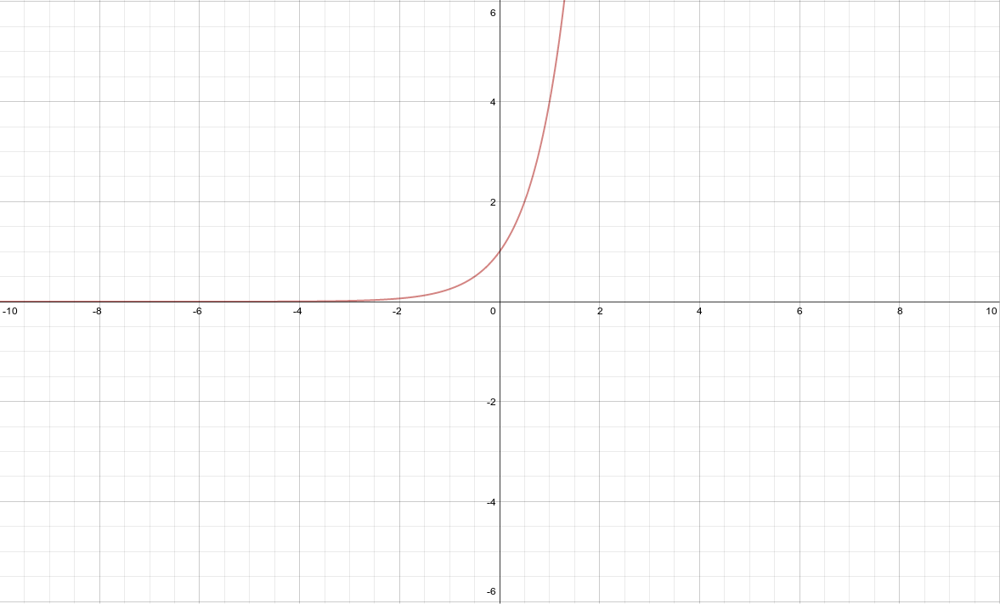

Exponential And Logistic Functions, Their Graphs And Applications¶

Writing exponential models¶
Source: Made it up.
Explanation:
This artifact demonstrates writing exponential models.
Artifact:
My height is growing exponential by 3.1% every year. Right now he I am 68.4 inches tall.
An exponential model for my height would be
Writing logistic models¶
Source: Chapter 3 Test Non Calculator Section #3
Explanation:
This artifact demonstrates writing logistic models.
Artifact:
Find the logistic function that has a limit to growth of 24, and initial value of 6, and goes through the point \((8, 14)\).
Graphing exponential functions¶
Source:
Explanation:
This artifact demonstrates graphing exponential functions.
Artifact:
Graph \(y = 4^x\)
| x | y |
|---|---|
| 0 | 1 |
| 1 | 4 |
| 2 | 16 |
| 3 | 64 |
\(\lim_{x \to -\infty} = 0\)
Applying exponential models¶
Source: Made it up.
Explanation:
This artifact demonstrates applying exponential models.
Artifact:
Using the previously defined model for my height (\(y = 68.4(1.031)^{x \over 3} \text{ x is in years.}\)).
I can try and guess what my height will be when I am 19 (I am 17).
The 3.1% statistic is obviously incorrect, so my answer is a bit skewed.
Applying logistic models¶
Source:
Explanation:
This artifact demonstrates applying logistic models.
Artifact:
Based on recent census data, a logistic model for the population of Dallas, t years after 1900, is as follows:
\(P(t) = {1,301,642 \over 1 + 21.602e^{-0.05054t}}\)
According to this model, when was the population 1 million?